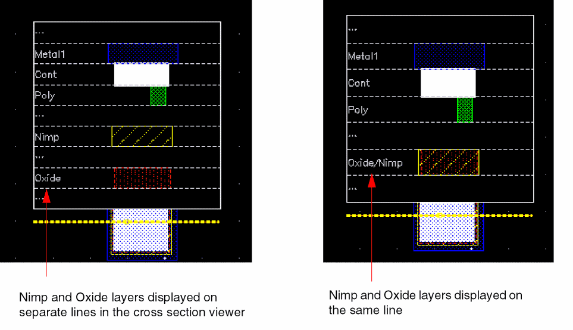

Cross Section Viewer Configuration File
You can use a configuration file to customize the settings that you want to use for displaying the cross section of a layout. If a configuration file does not exist, you can create one by using the sample auto-generated configuration file named generatedConfig.il. It contains certain default entries that you can edit as per your design requirements. The following image shows a sample configuration file. The layers listed in the file are read from the technology file.
Configuration File Information
The sample configuration file contains sections where you can define the following information:
-
Metal thickness: Lets you define the thickness of each physical layer in the cross section viewer. By default, all layers are displayed using the same thickness.
This information is defined using the geCrossSectionAddLayerThickness function.
The cross section viewer adapts the thickness of layers to show electrical connections between different layers. For example, in the technology diagnostic file if we have under ‘Electrically connected layers’:
(Metal1) -> (Cont) -> (Oxide & Nimp)(Oxide & Pimp)(Poly)
The thickness of the "Cont" (Contact) layer would adapt in the viewer to show that it is connected to a shape on Oxide and Nimp (for example). - Skipped layers: Lets you specify the layers that you do not want to be displayed in the cross section viewer. This information is defined using the geCrossSectionAddLayerToSkip function.
-
Skipped material: Lets you specify the layers that are made of a specific material not to be displayed in the cross section viewer. For example, you can filter the material
passivationCutandrecognitionif you do not want to display them in the viewer.
This information is defined using the geCrossSectionAddMaterialToSkip function. -
Layers merged on the same line: Lets you specify the layers that you want to be listed on the same line in the cross section viewer. For example, the following image shows how the cross sections look when the
NimpandOxidelayers are listed on separate lines and on the same line.
This information is defined using the geCrossSectionAddLayersToMerge function.

Loading the Configuration File
If you want the configuration file to be loaded automatically when you launch Virtuoso, you can add the .cdsinit file. For example, the following entry loads the configuration file named crossConfig.il associated with the technology library gpdk045, every time you start Virtuoso.
geCrossSectionLoadConfig("gpdk045" "./crossConfig.il")
Related Topics
Viewing the Cross Section of a Layout
Specifying Cross Section Viewer Settings
Return to top